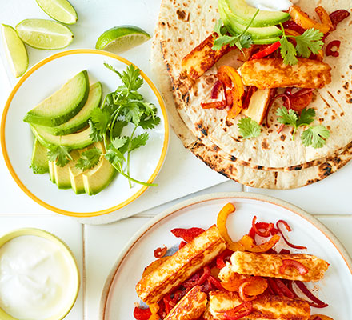

Halloumi fajitas
Ingredients
- 2 x 225g blocks light halloumi
- 2 tbsp olive oil
- 1 red onion, halved and sliced
- 2 mixed peppers, sliced
- 2 garlic cloves, crushed
- 2 tsp smoked paprika
- 1 tsp ground coriander
- 1 lime, juiced
- 8 small or 4 large tortilla wraps (use corn or flour)
- 1 avocado, stoned, peeled and sliced
- small handful of coriander leaves
- chilli sauce or soured cream, to serve (optional)
Recipe
- Split each halloumi block through the middle lengthways (they should have a natural seam).
Cut each half into four strips. Heat half the oil in a frying pan over a medium heat, and fry the halloumi strips for a few minutes on each side until golden. Transfer to a plate and set aside.
- Heat the remaining oil in the pan over a high heat, and fry the onion and peppers for 5 mins until just soft and starting to char. Add the garlic, paprika and coriander with some seasoning
and cook for 1 min more.Pour in the lime juice and fried halloumi, and stir very gently so the halloumi doesn’t break up. Will keep at room temperature for a few hours.
Reheat over a low heat with a little water.
- Warm the wraps in a low oven wrapped in foil. Alternatively, warm two at a time for 10 seconds in the microwave (not wrapped in foil),
or by holding them directly over a gas flame with a pair of tongs (this will give you flavourful charred edges).
- Pile the halloumi filling into the warm wraps, with a few slices of avocado each, some coriander leaves, and spoonfuls of chilli sauce or soured cream, if you like.